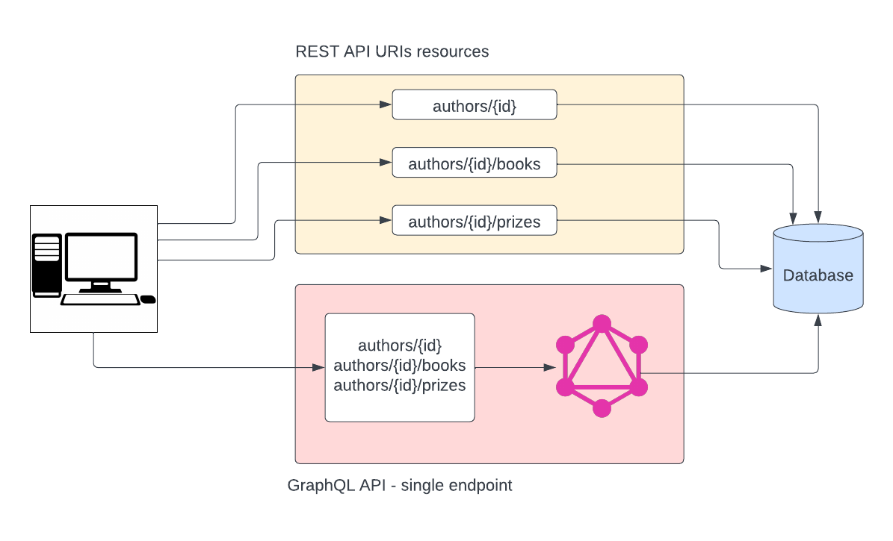
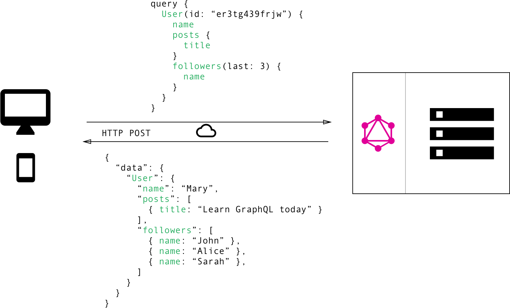
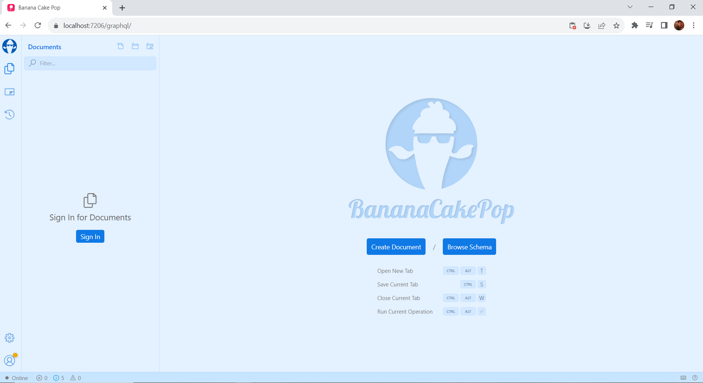
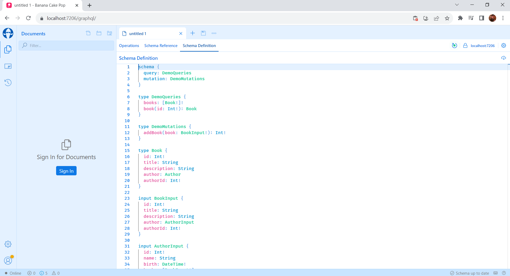
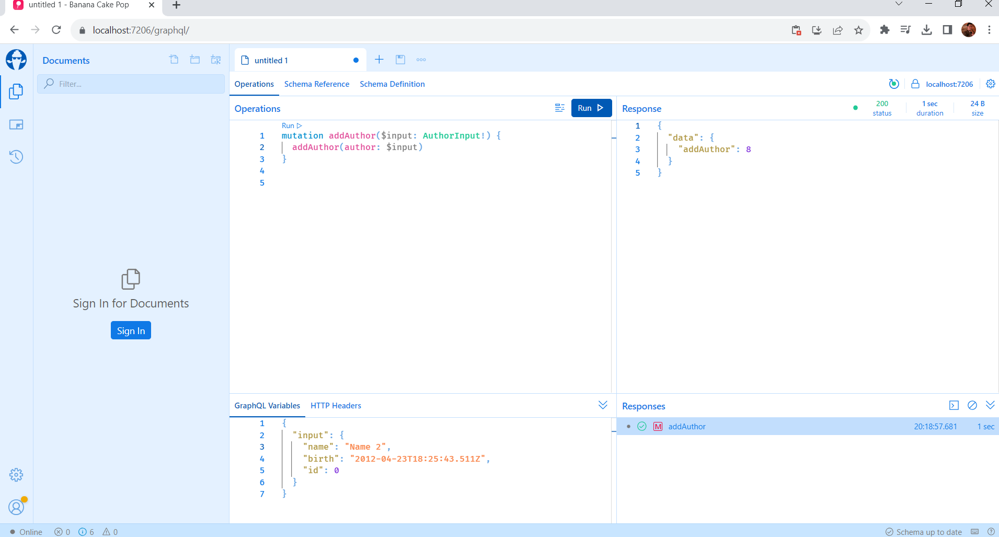
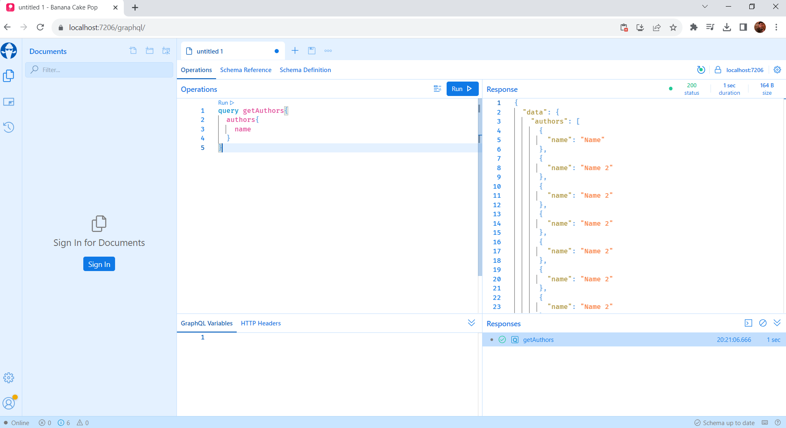
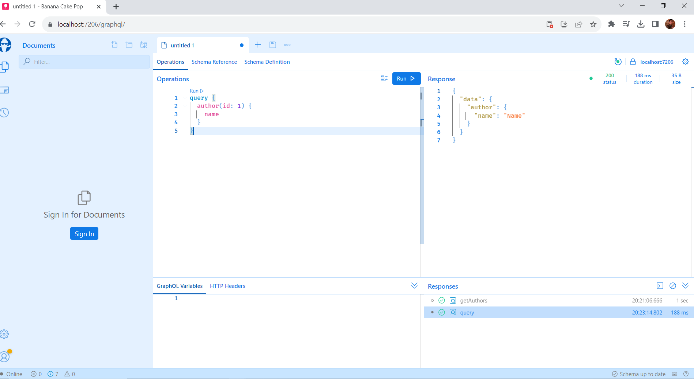

Welcome to GraphQL
GraphQL, often dubbed as a query language for APIs, allows clients to request exactly the data they need, no more and no less. Unlike REST APIs, where endpoints dictate the structure of the response, GraphQL empowers clients to define their data requirements through queries. This level of control eliminates over-fetching and under-fetching of data, streamlining network requests and enhancing application performance.
REST requests:
GraphQL requests:
GraphQL vs REST
Advantages of GraphQL
- Efficiency in Data Retrieval: GraphQL enables clients to request precisely the data they need, minimizing over-fetching or under-fetching of information. This tailored approach enhances performance and reduces unnecessary network traffic, ultimately resulting in faster response times.
- Single Request, Multiple Resources: Unlike REST, which often necessitates multiple endpoints for different resources, GraphQL allows clients to retrieve related data in a single request. This reduces the infamous "N+1 query" problem and simplifies data aggregation.
- Flexible Schema Evolution: GraphQL's schema-first design empowers developers to evolve APIs without breaking changes. New fields and types can be added without impacting existing clients, fostering agility and accommodating changing business requirements.
- Strongly Typed: GraphQL enforces a strongly typed schema, providing clear definitions of available data and operations. This eliminates ambiguity and reduces runtime errors, leading to more robust and maintainable codebases.
Disadvantages
- Complexity in Caching: Caching in GraphQL can be more challenging due to the dynamic nature of queries. Implementing efficient caching strategies requires careful consideration and additional effort.
- Potential for Over-Fetching: While GraphQL's flexibility is an advantage, inexperienced or poorly optimized queries might still lead to over-fetching of data, impacting performance.
HotChocolate - how to start?
- Create a new Asp Net core app with Web Api
dotnet new webapi -n HotChocolateDemoInstall-Package HotChocolateInstall-Package HotChocolate.AspNetCoreProgram.cs
using HotChocolateDemo.Entities;
using Microsoft.EntityFrameworkCore;
var builder = WebApplication.CreateBuilder(args);
// Add services to the container.
builder.Services.AddControllers();
// Learn more about configuring Swagger/OpenAPI at https://aka.ms/aspnetcore/swashbuckle
builder.Services.AddEndpointsApiExplorer();
builder.Services.AddSwaggerGen();
builder.Services.AddDbContext<DemoContext>(
options =>
{
options.UseSqlServer(builder.Configuration["DemoConnectionString"]);
}
);
var app = builder.Build();
if (app.Environment.IsDevelopment())
{
app.UseSwagger();
app.UseSwaggerUI();
}
app.UseHttpsRedirection();
app.UseAuthorization();
app.MapControllers();
app.Run();
appsettings.json
{
"Logging": {
"LogLevel": {
"Default": "Information",
"Microsoft.AspNetCore": "Warning"
}
},
"AllowedHosts": "*",
"DemoConnectionString": "Data Source=(localdb)\\mssqllocaldb;Initial Catalog=DemoDb;Integrated Security=True;TrustServerCertificate=True;"
}
Entities/Author.cs
namespace HotChocolateDemo.Entities
{
public class Author
{
public int Id { get; set; }
public string? Name { get; set; }
public DateTime Birth { get; set; }
public virtual ICollection? Books { get; set; }
}
}
Entities/Book.cs
using System.ComponentModel.DataAnnotations.Schema;
namespace HotChocolateDemo.Entities
{
public class Book
{
public int Id { get; set; }
public string? Title { get; set; }
public string? Description { get; set; }
public virtual Author? Author { get; set; }
[ForeignKey(nameof(Author))]
public int AuthorId { get; set; }
}
}
Entities/DemoContext.cs
using Microsoft.EntityFrameworkCore;
namespace HotChocolateDemo.Entities
{
public class DemoContext : DbContext
{
public DemoContext(DbContextOptions options) : base(options){}
DbSet<Author> Authors { get; set; }
DbSet<Book> Books { get; set; }
}
}
dotnet ef migrations add Init --context DemoContextdotnet ef database updateQueries and Mutations
In GraphQL, queries and mutations are two fundamental operations that clients can use to interact with the server and retrieve or manipulate data. They serve distinct purposes and are designed to facilitate efficient and flexible communication between clients and the GraphQL server.
Queries: Queries in GraphQL are used to request data from the server. They resemble a data structure that defines the shape and structure of the data the client is interested in fetching. With queries, clients can specify exactly what fields they need, allowing them to retrieve only the necessary data and avoid over-fetching.
Mutations: Mutations in GraphQL are used to modify data on the server. They provide a way for clients to create, update, or delete data. Mutations are similar in structure to queries but are executed with the intent of making changes to the data on the server.
The query type in GraphQL represents a read-only view of all of our entities and ways to retrieve them. A query type is required for every GraphQL server.
A query type can be defined like the following:
Queries/DemoQuery.cs
using HotChocolateDemo.Entities;
namespace HotChocolateDemo.Queries
{
public class DemoQueries
{
public List GetBooks([Service] DemoContext demoContext)
{
return demoContext.Books.ToList();
}
public Book? GetBook([Service] DemoContext demoContext, int id)
{
return demoContext.Books.FirstOrDefault(x => x.Id == id);
}
public List GetAuthors([Service] DemoContext demoContext)
{
return demoContext.Authors.ToList();
}
public Author? GetAuthor([Service] DemoContext demoContext, int id)
{
return demoContext.Authors.FirstOrDefault(x => x.Id == id);
}
}
}
A mutation type can be defined like the following.
Mutations/DemoMutation.cs
using HotChocolateDemo.Entities;
namespace HotChocolateDemo.Mutations
{
public class DemoMutations
{
public async Task AddBook(
Book book,
[Service] DemoContext demoContext)
{
demoContext.Books.Add(book);
await demoContext.SaveChangesAsync();
return book.Id;
}
public async Task AddAuthor(
Author author,
[Service] DemoContext demoContext)
{
demoContext.Authors.Add(author);
await demoContext.SaveChangesAsync();
return author.Id;
}
}
}
Here using attribute [Service] we inject the neccessary service into our service.
Next we start the server, and go to https://localhost:{your-start-port}/graphql/ to see IDE Banana Cake Pop, that will allow you to explore the schema and write GraphQL queries. There we can see the schema and start writting queries and mutations from that
Here we can look at schema
Lets try mutation to add some entities
And imidiately retrieve all of the properties of these entities using query (here we retrieve only property Name of every row)
And one specific entity with given id
We can specify the properties we want to retrieve in brackets of query
Subscriptions
GraphQL subscriptions provide real-time functionality to applications by allowing clients to subscribe to specific events. When these events trigger, the server immediately sends updates to the subscribed clients.
Before defining the subscription type, we need to add the WebSockets middleware to our request pipeline.
Program.cs
app.UseWebSockets();